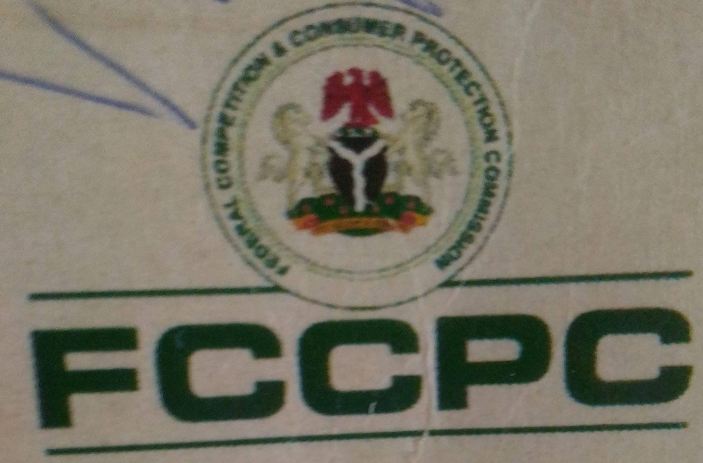

FEDERAL
MINISTRY
OF HEALTH
MINISTRY
OF HEALTH
OPEN SOCIETY
Initiative for West Africa
Printed by Talk Health Real Media Limited and Make Our Hospital Work Campaign; with support from the Open Society Initiative for West Africa (OSIWA).